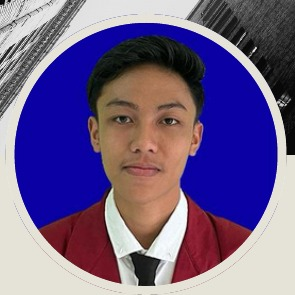

2024 – Sekarang
Universitas Muhammadiyah Malang
S1 Teknik Informatika
HALO, PERKENALKAN
Saya adalah mahasiswa Informatika yang memiliki ketertarikan pada bidang kreativitas visual. Saya ingin terus mengembangkan keterampilan, memperluas pengalaman, dan meningkatkan kemampuan komunikasi serta kerja sama tim.

PERSONAL PORTFOLIO
Informatika · Kreativitas Visual · Kerja Sama Tim
PERKENALAN
Saya adalah mahasiswa S1 Teknik Informatika di Universitas Muhammadiyah Malang. Saya memiliki ketertarikan pada bidang kreativitas visual dan ingin mengembangkan keterampilan serta pengalaman, baik dalam bidang kreatif maupun organisasi.
Saya juga ingin meningkatkan kemampuan komunikasi, kerja sama tim, dan pengalaman di bidang profesional agar dapat mengembangkan potensi diri.
LATAR BELAKANG
S1 Teknik Informatika
Jurusan MIPA
KEMAMPUAN
Keterampilan yang saya miliki dan terus saya kembangkan melalui pengalaman serta proses pembelajaran.
Memiliki ketertarikan pada kreativitas visual dan penyajian informasi secara menarik.
Berusaha menyampaikan informasi dengan baik dan membangun komunikasi yang positif.
Mampu bekerja bersama tim untuk mendukung penyelesaian tugas dan kegiatan.
Memberikan pelayanan yang baik dan berusaha menjaga kepuasan pelanggan.
Berusaha menyesuaikan diri dengan lingkungan dan tanggung jawab yang baru.
Mempelajari pemrograman melalui perkuliahan, praktikum, dan pengerjaan proyek.
HASIL PEMBELAJARAN
Beberapa proyek yang berkaitan dengan teknologi, pengelolaan informasi, dan analisis data.
Proyek aplikasi berbasis AI untuk membantu menghasilkan caption dan hashtag media sosial secara otomatis berdasarkan masukan pengguna.
Proyek website untuk mendukung pengelolaan cafe. Website ini menjadi bagian dari pembelajaran mengenai pengembangan sistem informasi dan pengelolaan operasional usaha.
Proyek analisis data menggunakan dataset dari Kaggle untuk mempelajari karakteristik data, mengidentifikasi pola, dan memperoleh informasi berdasarkan hasil analisis.
Catatan: ganti tautan GitHub dengan repository proyek yang sebenarnya. Sesuaikan deskripsi dengan fitur dan hasil pekerjaan yang benar-benar kamu kerjakan.
PENGALAMAN PROFESIONAL
Pelayanan Pelanggan dan Operasional Cafe
TERHUBUNG
Silakan hubungi saya melalui email atau kunjungi profil GitHub saya.